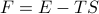

|
Thermodynamic Behavior of Ising Model
This page is still under construction!
Reminder about why we care about sums of states
What do thermodynamic averages mean here? Why do we care about this?
High temperature behavior: random spins, entropy dominate
Low temperature behavior: Mostly all aligned in one direction
Remark on the puzzling symmetry breaking of low temperature phase, and the huge kinetic barrier for getting from all-up to all-down state
Remark on perturbative high-temperature or low-temperature expansions
There must be a phase transition between paramagnetic and ferromagnetic phases!
(Include a phase diagram somewhere in here too?)
Peierl's argument for the Phase Transition
Interpret as a balance between entropy and energy – the sign of the free energy 
Go through argument of nucleating a droplet with surface length L…
Dimensionality matters, since there's no P.T. in one dimension.
Correlations?
|